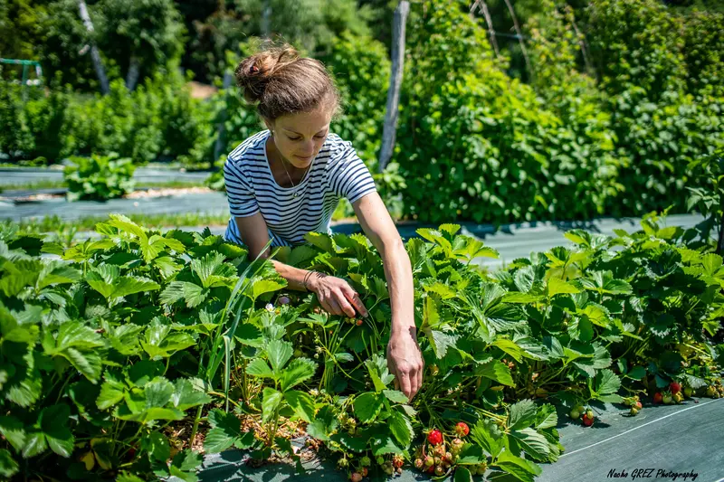

Productrice de petits fruits dans le Massif du Vercors, je cultive un verger tel que l’on pouvait en retrouver au sein de nos hameaux auparavant, avec une composition d’arbres et d’arbustes, adaptés à ce territoire de montagne. Il me tient à cœur de les soigner naturellement sans mécanisation ni traitements. Suite à mes cueillettes, j’aime composer et mettre en valeur les goûts et les saveurs!
